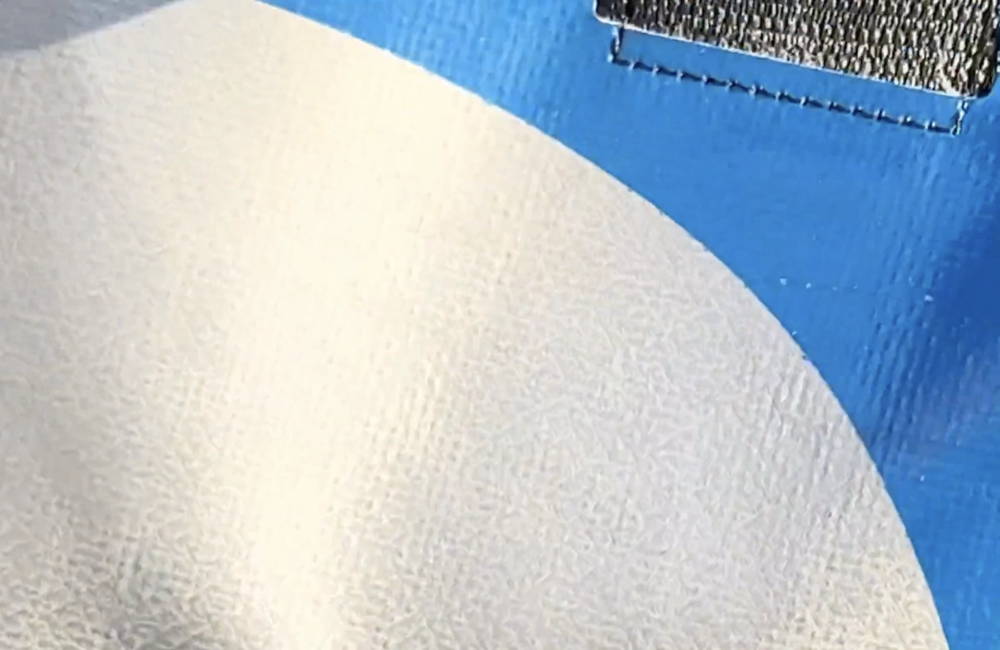
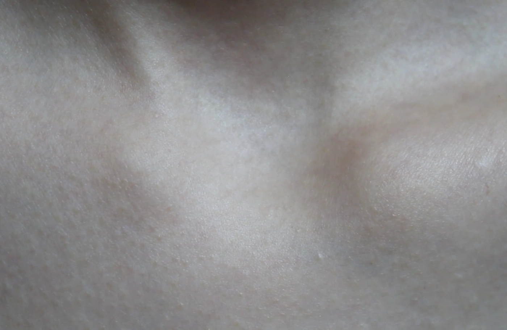
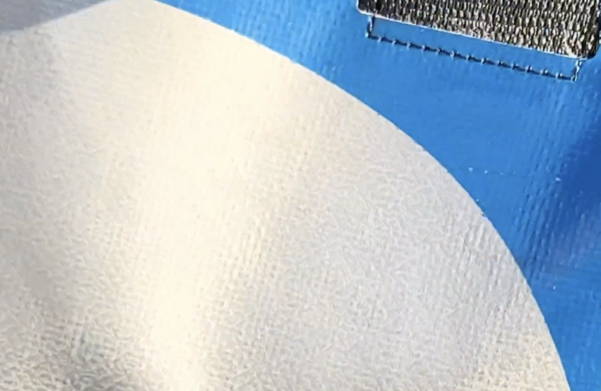
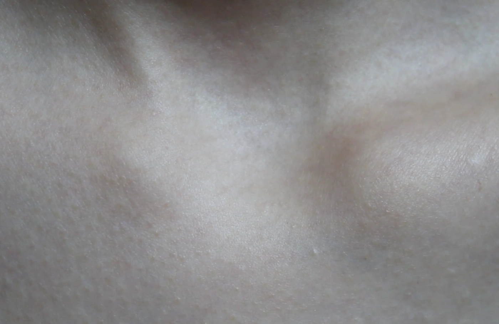

The melting recollection of crystallised memories from moments in time.
A short film premeried on [Home Cinema] in the program If the Wind Is Still
on March 25th, 2025.
Director — Olivia Huynh, Yin Englaan, Jaehyun Kim
Camera — iPhone 14, Canon E0S
Film · Photography · Sound
3:50min | Genre: Experimental
The Hague, March 2025
Camera — iPhone 14, Canon E0S
Film · Photography · Sound
3:50min | Genre: Experimental
The Hague, March 2025
 


